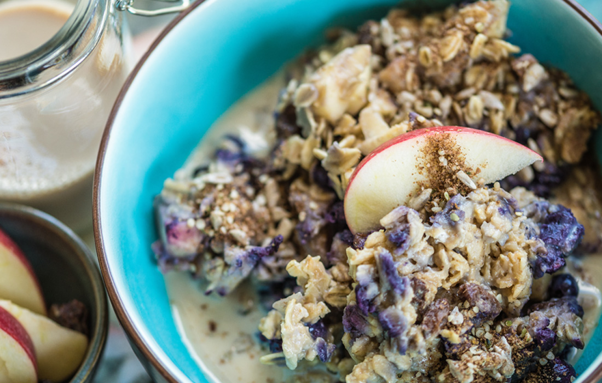

Super Seed Oatmeal

Description
A trio of sunflower, hemp and flax seeds team up in this satisfying hot oatmeal. Seeds provide omega-3 fats
which are essential to your health and lignans which reduce cholesterol and provide extra protection against cancer.
Ingredients
- /4 cup steel cut oats
- 1 cup unsweetened soy, hemp or almond milk
- 2 tablespoons raisins
- 1/2 cup fresh or frozen blueberries or mixed berries
- 1 tablespoon raw sunflower seeds
- 1 teaspoon hemp seeds
- 1/2 teaspoon ground flax seed
- 1/2 teaspoon ground cinnamon
Steps
- In a saucepan, combine the oats, non-dairy milk and raisins. Bring to a gentle boil, reduce heat and simmer
for 12-15 minutes, stirring gently to prevent sticking, until oats are tender and liquid is absorbed.
- Stir in blueberries and cook until heated through, about 1 minute.
- Remove from heat and stir in seeds and cinnamon.